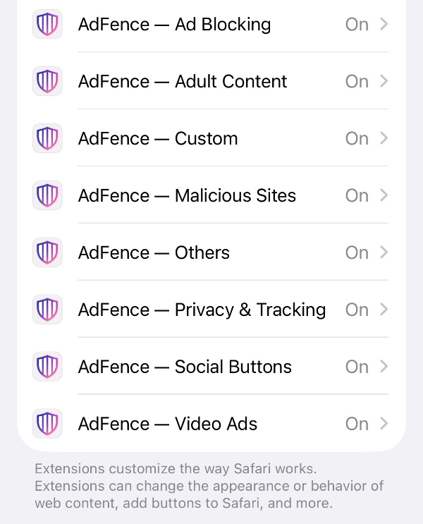

Como usar o AdFence
Ativá-lo leva cerca de um minuto. Tudo o resto é ajuste opcional — cinco ecrãs, pela ordem em que os vai encontrar.
Ative-o no Safari
Instalar o AdFence não é o último passo. O Safari mantém todas as extensões desligadas até as ativar manualmente, e é por isso que um bloqueador costuma parecer não fazer nada.
iPhone e iPad
- Abra Definições e toque em Safari.
- Toque em Extensões e depois em AdFence.
- Ative-o e permita o acesso aos sites onde quer que funcione.
Mac
- Abra o Safari.
- Vá a Safari → Definições → Extensões.
- Marque AdFence e escolha os sites a que pode aceder.
Depois abra o AdFence e toque em Plugins. A app pergunta diretamente ao Safari e mostra um Ativo verde ao lado de cada uma das suas oito extensões. Atualizar estado volta a verificar e Abrir definições de extensões do Safari leva-o ao ecrã acima.

Escolha o que bloquear
O separador Geral abre com um interruptor principal chamado Bloqueio. Enquanto estiver desligado, todos os bloqueadores carregam uma lista de regras vazia e não se bloqueia nada em lado nenhum. Mantenha-o ligado e use a Lista de bloqueio por baixo para escolher os filtros um a um.
- Bloquear anúncios — anúncios web e banners, e os espaços vazios que deixam para trás.
- Contornar anti-bloqueio — passa por páginas que detetam um bloqueador e esconde o muro que colocam no caminho.
- Navegação segura — bloqueia domínios conhecidos de malware e phishing antes de a página carregar.
- Bloquear rastreadores — cookies de rastreio e scripts de análise.
Os interruptores são independentes: desligar um deixa os outros exatamente como estavam.

Esconda a desordem que não pediu
Continue a descer no separador Geral. Outras definições reúne os restantes filtros — avisos de cookies, pop-ups, faixas de app, comentários, botões sociais, mineração e muito mais. Cada um é um interruptor separado, por isso esconder avisos de cookies nunca o obriga a bloquear anúncios.
Alguns escondem um elemento da página com CSS em vez de bloquear um pedido; a linha por baixo de cada interruptor indica qual das duas coisas faz.
Bloquear sites para adultos também está aqui. É uma lista negra de domínios opcional e não tem código de acesso — é uma conveniência, não um controlo parental.

Corrija um site sem mexer no resto
Nem todos os sites merecem o mesmo tratamento. Abra o separador Personalizado, toque em + e abre-se o painel Definições do site com um campo para o endereço.
- Bloquear site — impede totalmente o acesso ao site.
- Suspender bloqueio — desliga o AdFence apenas neste site; todo o resto fica intacto.
- Bloqueador de elementos personalizado — as suas próprias regras CSS para elementos deste site.
- Exceções por site — permita anúncios ou autorize scripts de rastreio, navegação insegura, botões sociais ou avisos de cookies, apenas para este endereço.
Toque em Guardar e o site passa a fazer parte da sua lista.

Guarde uma lista das suas próprias regras
Todos os sites que configurar aparecem no separador Personalizado. Ativar regras personalizadas é o interruptor principal de toda a lista: enquanto estiver desligado, não se aplica nenhuma regra de site. As extensões por trás dessas regras também têm de estar ativas no Safari — é para isso que serve o separador Plugins.
Editar permite reordenar ou remover entradas; + adiciona outro site.

Três coisas que vale a pena verificar primeiro
Um site parece avariado
Ative Suspender bloqueio para esse site nas Definições do site e deixe-o a funcionar em todo o resto.
Não se bloqueia nada em lado nenhum
Abra o separador Plugins. Uma extensão que não esteja Ativa no Safari não consegue bloquear nada, independentemente do que estiver definido na app.
Os avisos de cookies continuam a aparecer
Os avisos de cookies têm um interruptor separado dos anúncios. Procure em Outras definições, no separador Geral.
O AdFence na App Store
AdFence para iPhone, iPad e Mac. Sem conta, sem registo — ative a extensão no Safari uma vez e está feito.